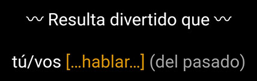

TL;DR: learn to conjugate Spanish verbs in all tenses and all patterns
(regular and irregular) in eight months with minimal daily study.
With my free deck of Anki flashcards, you can learn pretty much all of Spanish
conjugation patterns over eight months of short daily sessions. This is a
state-of-the-art deck powered by over 3,000 lines of code,
and it's one of my gifts to language learners worldwide.
This page is a brief manual to explain the design of my Anki flashcards to learn
the patterns of Spanish conjugation. With this deck you'll learn to conjugate in
all the tenses and you'll know seventy-two verbs inside out. Bear in mind that
long before you finish the deck you'll already know most of Spanish
conjugation as the last twenty verbs or so are for some much less frequent
patterns — sometimes unique to a single, little-used verb. Of course 72 verbs is
only a tiny fraction of Spanish verbs (I counted 11,441 in the DLE, the
most important dictionary of the Spanish language) but you'll know all the
patterns both for regular and for irregular verbs, which means you'll be able to
conjugate new verbs without too much thought.
In my opinion, this manual is a Must-Read to get the most out of the deck.
You're going to be spending months in it: you might as well spend twenty
minutes to understand how to use it. If nothing else, read the sections about
verbal and visual cues, and the guide to pace the study. But
really, there's a lot more to getting the most out of it, so read all of this
or be a loser.
Before we start, let me tell you where things are:
✽ Install the deck from
AnkiWeb
here
✽ To use it, you need to install either Ankidroid(Android),
Anki Desktop(Windows | Mac | Linux), or AnkiMobile(iOS)
✽
You are encouraged to help
improve the deck or fix errors on GitHub
✽ You can discuss this deck on Reddit (Anki, Spanishor
learnspanish) (or leave a commentat the bottom)
✽ Bonus:
table of
irregular Spanish past participles
✽ The inspiration for this deck was my
Ultimate Italian Conjugationdeck If you're really roaring to go, then
start out by adding just the first seven cards, which are for orientation:
Click or long-press deck name → Custom Study → Increase today's new card limit
→ 7
But you're sticking around for the manual, right?
(direct link)
Index
✽
Why this Deck?
✽
What is in this Deck?
✽
Anatomy of a Flashcard
✽
Clear Prompts to Save You Mental Cycles
✽
A Guide to Verbal and Visual Cues
✽
How to Pace the Study?
✽
Tags: Filtering by Tense, Subject and More
✽
FAQ
✽
Making this Deck: the Gory Details
✽
Need Help: fixes, improvements, translations, ports
✽
List of the 72 Verbs
✽
Text for the Deck Description in Anki
✽
Conjugation Resources
(direct link
|
top)
Why this Deck?
TL;DR: Learn ALL conjugation BEFORE you even start studying
Spanish!
The rest of the section explains this provocative premise, but if you're short
on time, this is one section you can skip (next:
what's in the deck).
You may already have started studying Spanish, and if so that's fine, you can
still use this deck, and you'll find that it is packed with advanced features.
But I created the deck especially with beginners in mind, inspired by an unusual
strategy that I had come up for Italian:
to learn all the forms of Italian conjugation before even starting to
formally study the language.
(Please don't tell me that learning conjugation is studying
the language… the point here isn't to have a semantic discussion.)
The method worked so well for me and the feedback from other users was so
enthusiastic that I decided to spread the love to the study of Spanish. There
are two main components to the goal of learning conjugation first, so let's
unpack this and look at the rationale for each piece.
1. Why would you learn Spanish conjugation BEFORE starting to study
the language?
✽ Maybe you don't have the time and mind space to earnestly start studying
Spanish grammar and vocab. You may not even be sure that you want to.
✽
You may be intensely immersed in the study of another language, and although you
are toying with the idea of also learning Spanish, you'd rather not see too much
of it in order not to start messing up your German or Swahili. Conjugation seems
like the right amount.
✽ If and when you start to study Spanish in
earnest, already knowing conjugation will be a huge leg up in a number of ways.
For instance, (i) Some people take years to learn all
the conjugation forms, so on that dimension you'll already be an advanced
student. (ii) You'll be able to read to a surprising
degree — with the help of a voice dictionary: even if you don't know a
particular verb, understanding what tense and person it's in lets you understand
the major part of sentence structure.
2. Why learn ALL Spanish verb conjugation patterns in one go?
✽ When I started Spanish, I read a delightful anecdote about the hardship
of someone who had cultivated a conjugation blind spot and found himself unable
to operate in an educated context. And indeed my experience showed me that you
need all the tenses almost immediately: regardless of what some say, with just a
few 'basic' tenses there was very little I could do. Even simple texts for
children mix everything together. If you know the present tense, right away you
find that you're missing words from the imperfect; and if you know the
imperfect, you find that tons of verbs use the preterit tense, the future, the
two subjunctives… This brought me to this axiomatic conclusion:
There is no such thing as a 'basic' tense!
✽ I don't believe in the false economy of sparing oneself the effort of
learning a particular tense. If you understand the effort and commitment
required to acquire a language, you know that the effort to learn one additional
tense is not only marginal, it has a huge payoff in satisfaction and fluency.
Additional tenses: marginal effort, huge payoff.
✽ You don't want your mind to nurture a hierarchy of 'easy' and
'difficult' tenses. This would lead you repeatedly try to avoid 'difficult'
tenses with cumbersome circumlocutions.
To a fluent person, all tenses are equal.
✽ In the case of Italian, I've met people who have years of experience
with the language and still haven't mastered the past subjunctive or the
passato remoto. It works for them because they're "people persons" — the
kind of people who use a language mostly to communicate with others. In my case,
I love to read and write. For Italian, I was aware that in books and articles
the subjunctive and passato remotoare all over the place, and didn't want
to feel crippled where it mattered the most to me. This argument carries over to
the Spanish indefinido(much more so than for Italian
passato remotoas the indefinidois used constantly in spoken
Spanish) and to both tenses of the subjuntivo.
Blind spot? If you read, don't be that guy.
So how did that play out for Italian? It worked wonders.
✽ Within seven months, I had learned all forms of all sixty verbs in my
Italian deck. Did I know them perfectly? No, but that's what SRS flashcards are
for: the software keeps showing you the cards you need to review. One year into
the process, I was seeing about 25 cards a day.
✽ After those seven
months, I was able to pick up a newspaper and read articles with the help of
Reverso, speaking all the words I didn't know into the microphone. In a
sentence, understanding the conjugation is a huge mental signpost — it's a lot
easier to fill in the blanks if you understand that aspect of the phrase. I
can't tell you how magical it feels to be able to decipher articles in a
language you don't speak.
✽ When I did start studying Italian, my
iTalki tutors(that link gives us both ten dollars off) couldn't believe I
was a beginner. Even though I missed many essential words, in my first week they
were already considering me an advanced student because my relative mastery of
conjugation enabled me to express more complex thoughts than many of their
long-term students. Of course I felt like a fraud and didn't take long to prove
to them how little I knew. But I was off to a flying start. (direct link
|
top)
What is in this Deck?
TL;DR: if you're in a hurry, you can skip this. Other sections are more
important.
Just trust that the deck has all you need. (Next:
Anatomy of a Flashcard)
72 Verbs, 4,200 Flashcards(3,800 if you remove the
subjunctive future) The deck has 4,239 conjugation flashcards plus seven
orientation cards. Most of the 72 verbs have 59 flashcards. At the bottom,
you'll find a list of the 72 verbs. There's also a separate page
explaining in detail how the verbs were selected.
Are the conjugations accurate? Absolutely. Everything else
couldhave little bugs in places, but the conjugations themselves were
extracted from the DLE, thereference dictionary for the Spanish
language throughout the Spanish-speaking world. This is important because a
number of conjugation resources only guessthe correct conjugation of
verbs not in their database by using some kind of algorithm, leading to errors.
The only conjugation algorithm I used is the one I programmed to highlight how
the actual conjugation (from the DLE) is irregular, i.e. how it differs from the
theoretical conjugation if the verb were regular.
What are the 59 cards for most verbs?
✽ Infinitive (one
card)
✽ Gerund (one card)
✽ Past participle (one card)
✽
Present (seven cards: yo, tú, vos, él/ella/usted, nosotros, vosotros,
ellos/ellas/ustedes)
✽ Imperfect (six cards)
✽ Preterit (six cards)
✽ Future (six cards)
✽ Conditional (six cards)
✽ Subjunctive
present (six cards)
✽ Subjunctive past (six cards)
✽ Imperative
(seven cards: tú, vos, él/ella/usted, nosotros, vosotros, ellos/ellas/ustedes,
and the negative imperative for tú)
✽ Subjunctive future (six cards)
Why these particular 72 verbs? Picking the verbs was a complex
process, partly computerized involving, among other aspects: 1. For each of the
families of irregular patterns established by the DLE, cross-checking
allthe verbs in these families (thousands of them in total)
against a frequency list of Spanish verbs in order to determine the most
suitable model verbs, as well as 'same-family verbs' to display on the same
card. 2. Considering all the spelling changes considered as regular (e.g.
sacar → saqué) that the student might need to see. There was more to it,
and if you're interested in those kinds of gory details I wrote a whole page
explaining how the verbs were selected.
Why one card per (verb, tense, subject) set, instead of a single card
for the whole present tense of haber, for instance?
Primarily, because if you were to memorize conjugations in blocks, they would
turn into some kinds of "rhymes" that would deny you direct access to the
conjugation for specific subjects. There is more: see
this questionin the FAQ. (direct link
|
top) Why is the vos form included? When I started
out with Spanish I thought I needed to learn the túform but not
immediately the vosform, used in Argentina and a few other countries. As
it turns out, the vosform is often heard in songs and movies, and if you
ever travel to Montevideo or Buenos Aires you'll be glad to have it in your back
pocket. In the end it's only two additional cards (one for the present, one for
the imperative) per verb. But if you're really not interested, just suspendthe
cards the first time you see them. (direct link
|
top) Why is the subjunctive future included? Except for
a handful of expressions and a few isolated regions, the subjunctive future
isn't used in modern Spanish. So why include it in the deck? My initial idea was
to only include the few forms that one hears as part of common expressions, such
as fuerein fuera lo que fuere. I asked several people in Spain and
Argentina for their opinion. The majority recommended excluding the subjunctive
future from the deck entirely. But a Spanish friend surprised me by advocating
that I include allof it. His argument was that he sometimes listens to
some canales rancioswhere pompous speakers seem it to make a point to use
the subjunctive future whenever they find a chance to fit it in a phrase. That
half-sold me. Then I remembered how easy it is to delete and suspendcards in
Anki, so I opted to explain to users at the outset that within each verb there
are six cards they can choose to suspend. Somehow it feels more complete that
way. And playing with the deck, it feels like the subjunctive future cards might
help reinforce the past forms of the subjuntivofor some learners.
Not in the deck: compound tenses Like English, Spanish uses an
auxiliary verb to produce compound tenses:
✽ I have eaten →
he comido
✽ They will have eaten → habrán comido
✽ She
had eaten → había comido
✽ …and so on (one compound form for each
of the eight tenses). In Spanish, these forms are derived by tagging the past
participle (above, comido) onto the auxiliary verb haber, properly
conjugated with the adequate subject in one of the eight tenses. In my
experience, including these tenses in a deck of flashcards is
counter-productive. In this deck, the compound tenses would roughly double the
number of cards. But for the extra thousands of cards, all you would get is a
rehashing of the conjugated forms of haberand of the 72 past participles,
all of which are already included. Once you know 'I would have' (habría)
and 'eaten' (comido), you know 'I would have eaten' (habría comido). If you start combining verbs, where do you stop? The combinations are
infinite: after 'I would have eaten', why not 'I should have eaten' (debería haber comido) or 'I would have liked to have eaten' (me hubiera gustado haber comido)? That's not material for flashcards, but for language practice. (direct link
|
top)
Anatomy of a Flashcard
TL;DR: if you're in a hurry, you can skip this. It's a beautiful section,
but you'll pick up its contents as you use the deck. Other sections are more
important.
Just know that the deck has a lot of information besides conjugations. (Next:
Clear Prompts to Save You Mental Cycles)
During normal usage you'll just swipe left or right (if on
mobile.) But when you are confused about a verb form or curious to learn more,
the card shows lots of extra details. This section walks you through the various
components that can be found on a flashcard. Bear in mind that some components
are not relevant to all cards. Colors Something to mention
before we dive in: I've tried to assign colors to enhance the semantics of
specific parts of the card, but if there's a color that doesn't work for you,
all the colors can be edited. The Prompt The prompt is
the front side of the card.
✽ The verb to conjugate appears [...in brackets...]
✽ Here the
phrase En aquel momento,and the down arrow ↧ alert you that the tense
to use is the indefinido. Sometimes a greyed out fragment — here, (un
ruido)— is shown as a hint to give more sense to the phrase. But the phrase
doesn't have to make sense, the point is not to learn phrases but to conjugate
the verb. The Answer The top part of the 'back' of the card
shows the answer.
Verbs in the Same Family The next section shows, when
available, how other verbs in the same 'family' (conjugation group) conjugate in
the same person and tense. This makes it easier to see how the pattern works.
Do you notice the dashed underlining below the infinitive form of the verb? It
is a link that takes you to the DLE's conjugation page for each alternate verb.
Notes: How is this Conjugation Irregular? Next comes the
Notessection. When a conjugation is irregular, the top part of the
Notessection aims to show you exactly what makes it irregular. This can
be really handy when you get confused about what the regular form would look
like.
As you can see here, the card shows a theoretical conjugation of the verb as
though it were regular in order to explain how the answer deviates from the
norm. Regular Spelling Changes Quite often, the spelling of a
Spanish verb changes slightly when it is conjugated so that the sound of a
consonant is preserved, as in fingir → finjo, or so that a hiatus is maintained,
as in actuar → actúo. These spelling changes are considered regular.
The notes try to bring those changes to your attention.
Stats for Irregular Verbs When a conjugation is irregular, the
Notessection shows you metrics to give you an idea of the degree to which
the verb is irregular on the whole.
Take note of the mention of high irregularity in the image above. Irregular
verbs are fanned into four classes corresponding to irregularity levels: low,
medium, high and extreme. These classes, in turn, drive the production of tags,
such as extreme_irregularity, which can be used by advanced students to
filter the cards they would like to review. And yes, the dashed
underlining below the infinitive takes you to the DLE's conjugation page for the
verb. Verb Family The next part of the Notessection
tries to give you a sense for how common this verb's set of conjugation patterns
is. Here are some examples.
In the Wild: Idioms, Proverbs and Quotes For some cards — about
one in twenty — I've picked an idiom, proverb or quote to illustrate the card's
conjugated form in action. The image below corresponds to the card for éramos.
The idea is just to add a bit of spice to a few cards and help reinforce the
learning. To add this 'spice', I wrote a script that scours thousands of idioms
and proverbs and outputs options for the appropriate tenses. I picked a few that
I liked for some reason, but there's room for more. If you have ideas for others
to include, please don't hesitate to
write. Link to this Manual Each card has a small link to
this manual in case you'd like to quickly consult the list of tags or the number
of cards in the next verb, for instance.
Tags The very bottom of the card shows you all the tags that
are attached to it. These tags enable advanced students to filter a range of
cards they would like to review.
There are a great number of tags: for more information, please see the section
about
filtering. (direct link
|
top)
Clear Prompts to Save You Mental Cycles
TL;DR: if you're in a hurry, you can skip this explanation and jump to a
more important section: Verbal and Visual Cues)
When I designed the deck, one the highest items on my list of specs was that
when looking at the front of the flashcard I didn't want to have to think about
what job I was supposed to do. This means that the front of the card had to
immediately convey:
✽ With which personto conjugate the
verb (I, he, they…)
✽ In which tenseto conjugate the verb
(present, future, subjunctive past…) When I learned Spanish, this deck didn't
exist. At the time, I tried a number of conjugation flashcard apps that provided
prompts that forced you to think. For instance:
Believe; third person of the plural; future
For me, this kind of prompt is worthlessbecause before
translating the card to Spanish I first have to translate the instructions
Believe; third person of the plural; futureinto something I understand.
So I never used these apps. English Verbal Cues For my Italian
deck, I wanted crystal-clear instructions that my brain would immediately
understand. In the above case, the perfect verbal prompt is simply:
They will believe
That worked great, and when building the Spanish deck that is what I used for
the early versions. But… Spanish Verbal Cues At some stage, I
started to experiment with Anki's system of Clozecards, which let you
leave a blank space on the front card for where the information to supply should
go. This allowed me to abandon English entirely and go to prompts 100% in
Spanish. In the case of they will believe:
I found this kind of prompt to be even more immediate than the English prompts I
had used for the Italian flashcards. This completely sold me, and I abandoned
the original version to focus on what Anki calls the Clozeversion, the
one with […omitted words…] This clear way of indicating which personand
which tensethe card should be translated to is what I'll refer from now
on as a verbal cue.
En el futuro, ellos [… creer …] … NOT … Believe; third person of the
plural; future
The next section will guide you into the details of such
cues. Visual Cues As I started working with my
Italian deck, I soon realized that verbal cues were not quite enough.
There were days when I looked at a hundred or so cards in a single session, and
at some stage I'd mix up verbal cues — for instance by translating a card to the
wrong tense of the past. That's a waste of time, as failing that card doesn't
mean you don't know the conjugation, but that you misunderstood the
instructions. To coax myself to "get it right" more often, I added some "visual
clues" to the cards. Maybe you noticed them on the previous screenshot? Here I
circled them so they would stand out:
The right arrows provide a visual clue that the tense is the future. I could
have created complex clues with images but wanted the flashcards to remain
defined by a simple text file, so I stuck with typographical clues. The next
section is
guide to the deck's verbal and visual clues. (direct link
|
top)
A Guide to Verbal and Visual Cues
TL;DR: Don't skip this if you want to make the most of the deck.
This section guides you through the verbal and visual "shortcuts" that are meant
to make your studying faster and easier. 1. Infinitive Prompts
for the infinitive have a verbal cue: El verbo en él (conjugated form)
es…
This card is prompting for hablar. 2. Gerund Prompts for
the gerund have a verbal cue: Mientras estoy estudiando… ella está
This card is prompting for hablando. The greyed-out part
(de lenguas)is just there to give an idea of possible context.
3. Participle Prompts for the participle have a verbal cue:
Hugo ha
This card is prompting for hablado. The greyed-out part
(de lenguas)is just there to give an idea of possible context.
4. Present Cards in the present tense have:
✽ a verbal
cue: ahora mismo
✽ a visual cue: the bull's eye symbol ⊙
This card is prompting for hablas. 5. Imperfect Cards in
the imperfect tense have:
✽ a verbal cue: En esa época, a menudo,
✽
a visual cue: the left arrow ←
This card is prompting for hablabas. 6. Preterit Cards
in the preterit tense have:
✽ a verbal cue: En aquel momento,
✽ a
visual cue: the down arrow ↧
_files/w_sp-7-hablaste2.jpg)
This card is prompting for hablaste. 7. Future Cards in
the future tense have:
✽ a verbal cue: En el futuro,
✽ a visual cue:
the right arrow →
This card is prompting for hablarás.
8. Conditional Cards in the conditional tense have:
✽ a
verbal cue: Si sucediera esto,
✽ a visual cue: the elipsis …
This card is prompting for hablarías.
9. Subjunctive present Cards in the subjunctive present have:
✽ a verbal cue: Resulta divertido que
✽ a visual cue: the wave
〰

This card is prompting for hables.
10. Subjunctive past Cards in the subjunctive past have:
✽ a verbal cue: Fue sorprendente que
✽ a visual cue: the looping
back arrow ↫
This card is prompting for hablaras | hablases.
11. Imperative Cards in the regular imperative have:
✽ a
verbal cue: Hombre, por favor, …, ya
✽ a visual cue: the exclamation
points ¡ !
✽ an extra visual cue to distinguish
túfrom vos
This card is prompting for habla.
This card is prompting for hablá. For the negative imperative, since the
conjugation is identical to the subjunctive present, there is only one card, as
a reminder, for tú / vos. That card has:
✽ a verbal cue: Mujer, por
favor, no …
✽ a visual cue: the exclamation points
¡ !
This card is prompting for no hables.
12. Subjunctive future Cards in the subjunctive future have:
✽ a verbal cue: Si en un dudoso futuro (…) así, ¡suerte!
✽ a visual
cue: the looping forward arrow ↬
This card is prompting for hablares. (direct link
|
top)
How to Pace the Study?
TL;DR: Don't skip this if you want to study in a comfortable and optimal
way.
If you're an advanced student, please skip to the
Tags & Filteringsection. If you're starting out and would like to
complete the deck in about eight months, here are the study patterns I
recommend.
1. New cards: on demand, not automatic, not random You need to
be in charge of when you start studying new verbs. For this reason, the number
of new cards to be shown each day is set to zero. It's up to you to request new
cards, as outlined below. Before anything else, here's how to add cards in Anki.
The number seven is for you first start the deck, as there are seven cards for
orientation.
Click or long-press deck name → Custom Study → Increase today's new card limit
→ 7
In the deck's options, the cards are shown in their order in the deck (not
random), and that's important in order to learn one verb at a time when you see
it the first time — otherwise your head will explode! Furthermore, before adding
new cards, I recommend you clear your review queue for the day — meaning, bring
the green and red numbers to zero by studying all the cards in the queue. Then
you
add the new cards(usually an entire verb), and for that first pass you
can focus on the new material without having Anki mix it with your review cards.
2. Study every day If you don't know Anki, you only need to
know one thing: unless you're willing to study every day, don't even get started
— it won't work. This system relies on staying on top of your review queue, and
if you skip even a day, the backlog will discourage you: you'll soon quit.
3. First month-to-five-weeks: six verbs In the first month to
five weeks, aim to complete the first six verbs:
ser, haber, estar, hablar, deber, vivir. That gives you the two forms of
to be, the auxiliary verb haberand the three regular forms.
✽ Week one: Ser(58 cards)
✽ Week two: Haber(58 cards)
✽ Week three: Estar(57 cards)
✽ Weeks four & five:
Hablar, Deber, Vivir(59 cards each)
Important for Month One: When you add cards, draw a number of new cards that
corresponds to full logical units.
If you can handle it, add one entire verb at a time. It might be hard at first,
but when you start to get the patterns, you'll find that very comfortable. As a
reminder, here is how you would add the 58 cards for the verb serafter
completing the seven orientation cards:
Click or long-press deck name → Custom Study → Increase today's new card limit
→ 58
If you're going to split a verb, at least try not to split a tense in two — for
instance, add all six cards of the future tense. It may be hard to know how many
cards to add for the present and the imperative as both of these contain either
six or seven cards, depending on whether they have a vosform. These are
the number of cards per logical block:
✽ first 3 cards: infinitive, gerund
and past participle
✽ next 6 to 7 cards: present
✽ next 6 cards:
imperfect
✽ next 6 cards: absolute past
✽ next 6 cards: future
✽ next 6 cards: conditional
✽ next 6 cards: subjunctive present
✽ next 6 cards: subjunctive past
✽ next 6 to 7 cards: imperative
✽ next 6 cards: subjunctive future(remember you can
suspendthe six cards if you don't want to study that tense)
4. Months Two to Eight: one verb every three days After the
first month, try to introduce a full verb every three days or so. If you have to
go to four days, don't sweat it, you'll still complete the deck in about ten
months. And bear in mind that long before you finish the deck you'll already
know mostof Spanish conjugation as the last twenty verbs or so are for
some much less frequent patterns — sometimes unique to a single, little-used
verb.
Before adding the next verb, Thou shalt check its number of cards
IMPORTANT: before adding a verb, you MUST check how many forms it has, so
that you can add the correct number of new cards.
Here are some ways to check the number of cards of the next verb:
✽
Consult the list of 72 verbson this page.
✽ On Ankidroid,
long-press the deck's name, select 'Options', tap Deck descriptionat the
bottom for the full list (scrollable).
✽ On
Anki for Windows / Mac / Linux, tap the cog wheel to the right of the
deck's name, select 'Options', select the 'Description' tab.
✽ I don't
have the iOS version (AnkiMobile)but I'm sure it's similar. (direct link
|
top) 5. A note about deck options Even if you have
downloaded the deck from AnkiWeb, my set of recommended deck options may
not have carried over. Here are the options I recommend for this deck:
✽
New cards: steps = 2 15 1440 5760 14400, order = new cards in order added, new
cards/day = 0, graduating interval = 30, easy interval = 4, starting ease = 250%
✽ Reviews: maximum = 200, easy bonus = 130%, interval modifier = 100%,
maximum interval = 1826
✽ Lapses: steps = 15, new interval = 0%, minimum
interval = 1 day, leech threshold = 0, leech action = tag only
✽ General:
max answer time = 40 seconds, show answer timer (direct link
|
top)
Tags: Filtering by Tense, Subject and More
Although this is not how I recommend beginners use the deck, if you're an
advanced student at times you may want to focus your study on a specific section
of the deck. To do so, you can create filtered decks using the tags below. Tags
for filtered decks can be combined. For instance, if you wanted to look at all
cards that have a vosform in the present tense, you can use this filter:
tag:vos tag:presente Here is the full list of tags.
1. By Subject tag:yo tag:tú_vos tag:él_ella_usted tag:nosotros
tag:vosotros tag:ellos_ellas_ustedes tag:tú tag:vos
2. By Tense tag:presente tag:imperfecto tag:indefinido
tag:futuro tag:condicional tag:subjuntivo_presente tag:subjuntivo_pasado
tag:imperativo tag:negative_imperativo tag:subjuntivo_futuro
3. By Verb Ending tag:ends_in_ar tag:ends_in_er tag:ends_in_ir
4. By Spanish Verb Name tag:asir tag:sonreír tag:actuar …and so
on (see the above verb list)
5. By Level of Regularity tag:regular_verb tag:irregular_verb
tag:regular_form tag:irregular_form tag:low_irregularity
tag:moderate_irregularity tag:high_irregularity tag:extreme_irregularity
6. Conjugations in the Wild tag:in_the_wild tag:modismo
tag:dicho tag:refrán tag:cita 7. Misc Tags tag:orientation
tag:regular_spelling_change tag:pronominal (direct link
|
top)
Making this Deck: the Gory Details
For anyone interested in the nitty-gritty of how this deck was produced, here's
a summary. The deck is output at the end of a chain of Python programs I wrote
that exceed 3,000 lines of code in total. It was definitely a labor of love. The
first challenge was selecting the set of verbs. There's a whole page explaining
the details of
how the verbs were selected, but here's a quick summary. In books and on
the web there are many lists of 'pattern verbs', but none convinced me. Luckily,
I noticed that the DLE refers to some verbs as models for a given irregular
pattern. A first script went into the entrails of the EPubversion of the
DLE to identify the modeloverbs (there are 68) and, more importantly, to
identify in which of those 68 families each of the Spanish language's more than
3,000 irregular verbs fall. Some of the DLE's 68 modeloverbs are not the
most frequent in their families, so I ran the families against a frequency list
of verbs to identify the most frequent verb in each family, then massaged the
results a bit to get something that made sense on the whole. Since the
alternates were also ranked, that gave me a starting place to select one to six
alternate verbs to show with each modeloverb — the idea being to help the
student reinforce habléby seeing quedé, and so on. Next, a script
downloaded the DLE conjugation pages for all the modeloverbs and their
chosen alternates, and another extracted that information into clean structures.
Wanting to show howeach conjugation is irregular, I had to write a
conjugatorscript to decline each verb as though it were regular, e.g.
pedir→ yo pedo. But here we have to deal with a lot of legitimate
letter changes (e.g. fingir → finjo, cazar → cacé, argüir → arguyoetc.)
and make sure these are not flagged as irregular. This enabled me to compute
statistics about the percentage irregularity of each verb, and to establish an
irregularity ranking from low to extreme in order to provide tags for those
who'd like to filter their decks. At some stage there was an English conjugator
when I was planning to show an English front side, but after outputting a Cloze
version of the deck I was fully sold on that format of flashcards. Getting all
of the information onto the cards takes a bit of work, especially considering
that you can't write a generic card for all cases: for instance, think of how
you'd prompt for the imperative of deber, let's say for the
túvoice. It's must mustmadness! Then the idea came to me of adding
a refránor modismofor certain cards, just as an extra element to
add interest every now and again, e.g. for
Éramos → éramos pocos y parió la abuela… A script extracted thousands of
dichos from several dictionaries and sources, indexed all the words and produced
options for many words in the deck… I only handpicked a few. That's it in a
nutshell, but there was a lot more to it. (direct link
|
top)
FAQ
(link to this question
|
faq)
Can I change the colors used in the flashcards? Absolutely.
Every little element of the cards is targeted with a CSS class.
You can edit those classes to your heart's content, changing the colors, font
size, and even making some of the sections disappear. To do that, in Anki, go to
Tools / Manage Note Types / Ultimate Spanish Conjugation / Cards / Styling
and edit the CSS. You'll probably find it easier to paste the CSS into a proper
text editor (as in the above screenshot) before pasting it back into the Anki
card's styling definition. (link to this question
|
faq)
Why did you create a separate note for each conjugation, instead of a single
card for the whole present tense of haber, for instance?
There are two reasons. From learning to conjugate German — and Spanish without
the benefit of this deck — what I observed is that when I used a book to review
conjugations, each tense became a sort of "song" or "nursery rhyme". For
instance, for haber, I would end up memorizing the present tense as this
"song": He, has, ha. Hemos, habéis, han. The result was that when I would
need to produce the words "they have", I would find myself mentally repeating
that little song until getting to han. Obviously, this is not optimal.
What you want is direct, random access to conjugated verbs. This is why the deck
has a card for each (verb, tense, subject)set: on day two, Anki shows you
the cards in random order. A second reason is that for a whole
(verb, tense)couple, you might perfectly memorize five subjects but
always stumble on the sixth. It's not optimal to keep getting exposed to the
five items you already know just to memorize the one you keep forgetting — in
fact, that's the whole point of a spaced repetition system. After a
while, Anki shows you the cards in an order that matches how well you've
memorized each particular conjugation. (direct link
|
top)
Need Help: fixes, improvements, translations, ports
There are various ways you can help. I'd be grateful!
1. Fixes Most little bugs have been caught, but that doesn't
mean there isn't a typo or missing pronunciation hint. Please report in the
commentsbelow or on GitHub. 2. Improvements Do
you have other ideas:
✽ for idioms, proverbs, quotes?
✽ for visual
clues?
✽ for verbal cues? Other improvements you can think of? Please send
a smoke signal in the commentsbelow or on GitHub.
3. Translations At some stage I'd like to produce a
Spanish-only version. If you're interested in helping with that, please get in
touch.
4. Port to More Languages (e.g. Learn German Conjugation)
This is different from Translationsabove: the idea is to use the format
of this deck to learn conjugation in other languages. The verbs would be
different because (i) the most frequent verbs will differ and (ii) different
verbs will need to serve as patterns both for regular and irregular conjugation
forms. (direct link
|
top)
List of the 72 Verbs
The deck has 4,239 conjugation cards and seven orientation cards. For reference,
here is the list of the 72 verbs in the deck.
01. Ser (to be): 58 cards
02. Haber (to have): 58 cards
03. Estar (to be): 57 cards
04.
Hablar (to speak): 59 cards
05. Deber (to have to): 59 cards
06.
Vivir (to live): 59 cards
07. Tener (to have): 59 cards
08. Decir
(to say): 59 cards
09. Hacer (to do): 59 cards
10. Poder (to be able
to): 59 cards
11. Ir (to go): 58 cards
12. Dar (to give): 57 cards
13. Ver (to see): 57 cards
14. Saber (to know): 59 cards
15.
Querer (to want): 59 cards
16. Creer (to believe): 59 cards
17.
Poner (to place): 59 cards
18. Parecer (to seem): 59 cards
19.
Seguir (to follow): 59 cards
20. Pensar (to think): 59 cards
21.
Venir (to come): 59 cards
22. Encontrar (to find): 59 cards
23.
Salir (to go out): 59 cards
24. Volver (to return): 59 cards
25.
Sentir (to feel): 59 cards
26. Producir (to produce): 59 cards
27.
Buscar (to look for): 59 cards
28. Oír (to hear): 59 cards
29.
Entender (to understand): 59 cards
30. Morir (to die): 59 cards
31.
Caer (to fall): 59 cards
32. Jugar (to play): 59 cards
33. Elegir
(to choose): 59 cards
34. Traer (to bring): 59 cards
35. Andar (to
walk): 59 cards
36. Incluir (to include): 59 cards
37. Valer (to be
worth): 59 cards
38. Reunir (to bring together): 59 cards
39. Actuar
(to act): 59 cards
40. Caber (to fit): 59 cards
41. Enviar (to
send): 59 cards
42. Adquirir (to acquire): 59 cards
43. Coger (to
pick up): 59 cards
44. Sonreír (to smile): 59 cards
45. Prohibir (to
forbid): 59 cards
46. Oler (to smell): 59 cards
47. Asir (to grasp):
59 cards
48. Lucir (to shine): 59 cards
49. Aislar (to isolate): 59
cards
50. Adecuar (to adapt): 59 cards
51. Averiguar (to verify): 59
cards
52. Bendecir (to bless): 59 cards
53. Complacer (to oblige):
59 cards
54. Pudrir (to rot): 59 cards
55. Predecir (to predict): 59
cards
56. Yacer (to lie): 59 cards
57. Erguir (to erect): 59 cards
58. Aunar (to unite): 59 cards
59. Rehusar (to refuse): 59 cards
60. Errar (to err): 59 cards
61. Engullir (to gobble): 59 cards
62. Discernir (to discern): 59 cards
63. Gruñir (to grunt): 59 cards
64. Endeudarse (to go into debt): 59 cards
65. Delinquir (to break
the law): 59 cards
66. Argüir (to contend): 59 cards
67. Reñir (to
quarrel): 59 cards
68. Corroer (to corrode): 59 cards
69. Tañer (to
strum): 59 cards
70. Prohijar (to co-opt): 59 cards
71. Raer (to
scrape): 59 cards
72. Europeizar (to europeanize): 59 cards
Text for the Deck Description in Anki
When publishing the Deck to Ankiweb, the Description contained by my deck
options does not appear in the deck you download. That's a shame, but apparently
for the time being that's an Anki feature, not a bug. If you'd like to add the
deck the description I intended, which is handy because it contains the list of
verbs and tags, I recommend you paste the following in the
description field of the deck options:
✽ In Anki desktop, options
are accessed via the cogwheel to the right of the deck's name. Select the
Descriptiontab and paste.
✽ On Ankidroid, options are accessed by
long-pressing the deck's name and selecting Options. Navigate to the
bottom and paste. Description to Paste in Anki
1. Remember to read the MANUAL!
2. To filter the deck by tense, subject
or verb, skip to the bottom.
Here is the list of verbs. The numbers tell you how many cards to add
when you're ready for a new verb.
01. Ser (to be): 58 cards
02. Haber (to have): 58 cards
03.
Estar (to be): 57 cards
04. Hablar (to speak): 59 cards
05. Deber
(to have to): 59 cards
06. Vivir (to live): 59 cards
07. Tener (to
have): 59 cards
08. Decir (to say): 59 cards
09. Hacer (to do): 59
cards
10. Poder (to be able to): 59 cards
11. Ir (to go): 58 cards
12. Dar (to give): 57 cards
13. Ver (to see): 57 cards
14.
Saber (to know): 59 cards
15. Querer (to want): 59 cards
16. Creer
(to believe): 59 cards
17. Poner (to place): 59 cards
18. Parecer
(to seem): 59 cards
19. Seguir (to follow): 59 cards
20. Pensar
(to think): 59 cards
21. Venir (to come): 59 cards
22. Encontrar
(to find): 59 cards
23. Salir (to go out): 59 cards
24. Volver (to
return): 59 cards
25. Sentir (to feel): 59 cards
26. Producir (to
produce): 59 cards
27. Buscar (to look for): 59 cards
28. Oír (to
hear): 59 cards
29. Entender (to understand): 59 cards
30. Morir
(to die): 59 cards
31. Caer (to fall): 59 cards
32. Jugar (to
play): 59 cards
33. Elegir (to choose): 59 cards
34. Traer (to
bring): 59 cards
35. Andar (to walk): 59 cards
36. Incluir (to
include): 59 cards
37. Valer (to be worth): 59 cards
38. Reunir
(to bring together): 59 cards
39. Actuar (to act): 59 cards
40.
Caber (to fit): 59 cards
41. Enviar (to send): 59 cards
42.
Adquirir (to acquire): 59 cards
43. Coger (to pick up): 59 cards
44. Sonreír (to smile): 59 cards
45. Prohibir (to forbid): 59
cards
46. Oler (to smell): 59 cards
47. Asir (to grasp): 59 cards
48. Lucir (to shine): 59 cards
49. Aislar (to isolate): 59 cards
50. Adecuar (to adapt): 59 cards
51. Averiguar (to verify): 59
cards
52. Bendecir (to bless): 59 cards
53. Complacer (to oblige):
59 cards
54. Pudrir (to rot): 59 cards
55. Predecir (to predict):
59 cards
56. Yacer (to lie): 59 cards
57. Erguir (to erect): 59
cards
58. Aunar (to unite): 59 cards
59. Rehusar (to refuse): 59
cards
60. Errar (to err): 59 cards
61. Engullir (to gobble): 59
cards
62. Discernir (to discern): 59 cards
63. Gruñir (to grunt):
59 cards
64. Endeudarse (to go into debt): 59 cards
65. Delinquir
(to break the law): 59 cards
66. Argüir (to contend): 59 cards
67.
Reñir (to quarrel): 59 cards
68. Corroer (to corrode): 59 cards
69. Tañer (to strum): 59 cards
70. Prohijar (to co-opt): 59 cards
71. Raer (to scrape): 59 cards
72. Europeizar (to europeanize): 59
cards
Altough this is not how I recommend beginners use the deck, if you're an
advanced student at times you may want to focus your study on a specific
section of the deck. To do so, you can create filtered decks using the tags
below.
Tags for filtered decks can be combined. For instance, if you wanted to
look at all cards that have a 'vos' form in the present tense, you can use
this filter:
tag:tú_vos tag:presente
Here is the full list of tags.
1. By Subject
tag:yo
tag:tú_vos
tag:él_ella_usted
tag:nosotros
tag:vosotros
tag:ellos_ellas_ustedes
tag:tú
tag:vos
2. By Tense
tag:presente
tag:imperfecto
tag:indefinido
tag:futuro
tag:condicional
tag:subjuntivo_presente
tag:subjuntivo_pasado
tag:imperativo
tag:negative_imperativo
tag:subjuntivo_futuro
3. By Verb Ending
tag:ends_in_ar
tag:ends_in_er
tag:ends_in_ir
4. By Spanish Verb Name
tag:asir
tag:sonreír
tag:actuar
…and so on (see the above verb list)
5. By Level of Regularity
tag:regular_verb
tag:irregular_verb
tag:regular_form
tag:irregular_form
tag:low_irregularity
tag:moderate_irregularity
tag:high_irregularity
tag:extreme_irregularity
6. Conjugations in the Wild
tag:in_the_wild
tag:modismo
tag:dicho
tag:refrán
tag:cita
7. Misc Tags
tag:orientation
tag:regular_spelling_change
tag:pronominal
(direct link
|
top)
Conjugation Resources
There are a number of online conjugators, but I advise you against using any
service besides the conjugations provided by
the DLE. Why? because many sites provide conjugations that are based on
formulas or "artificial intelligence" rather than actual knowledge of the rules.
For instance, I've seen bad errors a number of times on the Reverso website.
Apart from that, if I come across interesting conjugation resources, I will list
them here.
✽ This page presents
uses of the voseo that differ from the one in Buenos Aires
———
That's about it for now. I hope this page gave you a good sense of how to use my
Anki flashcards to master Spanish conjugation. Wishing you loads of fun on the
Spanish language-learning path! Smiles, Andy
Leave a Comment
1-5 of 5 Threads
Dante – USA
January 02, 2021 - 00:47
Subject: Input vs Output
This deck is very well made, and I appreciate you sharing it for beginners
like me to make rapid progress. Thank you. I have a question though. Do you
not feel that recognition cards would be better for a complete beginner? The
english definition for the verbs can be found with just a few clicks, I know.
But I don't know if this is quite as efficient as if it were a simple
recognition deck (Spanish front / english translation back) for a complete
beginner. I'm curious to hear your thoughts.
Reply to Dante
Andy
January 02, 2021 - 11:34
Subject: RE: Input vs Output
Hi Dante, for me the answer is clear as day: the crucial thing is to start
producing correct forms in the foreign language as soon as possible, hence the
chosen direction. For recognition, any writing material can serve, e.g.
newspapers. Warmest wishes
Khalid – UK
December 28, 2020 - 01:52
Subject: You are incredible
I've been using Anki for a few years now and this is the best, most thought
out deck I have ever used. You deserve everything in life. I've sent this deck
to some classmates which are currently taking and Spanish and you have saved
them years - we all thank you!!
Reply to Khalid
Andy
December 28, 2020 - 09:48
Subject: RE: You are incredible
Hi Khalid, Thank you so much for your kind encouragements. If you have a
second, I'd be grateful if you kindly gave a thumbs up to the deck on its
Ankiweb page, that will help others find it among the thousands of other
decks. https://ankiweb.net/shared/info/638411848 Wishing you fun and success
in your study of Spanish, as well as a stimulating and fulfilling 2021 Kind
regards Andy